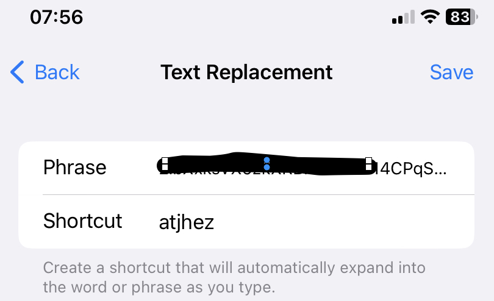

The easisest way to enter the Token, is to create a Text Replacement for it on the Iphone. This is done in Settings->General->Keyboard->Text Replacement. When the prompt appears in the Watch then enter the text replacement phrase in the iPhone instead. On my iPhone I have created atjhez as the replacement phrase as seen below:
created with
HTML Designer .